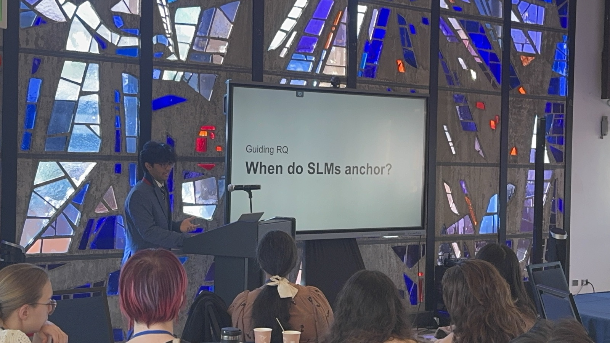
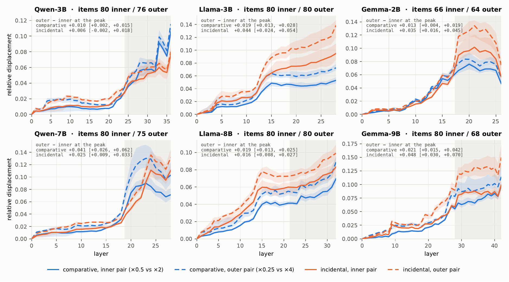

Preprint · Talk at TADA 2026
Three behaviours under one label
Six small language models, 506 numeric questions, over 200,000 answers. Every model anchors, and what looks like one bias is three different behaviours.

Inside all six models, the high-anchor and low-anchor runs separate with depth. With Herbert Chang.